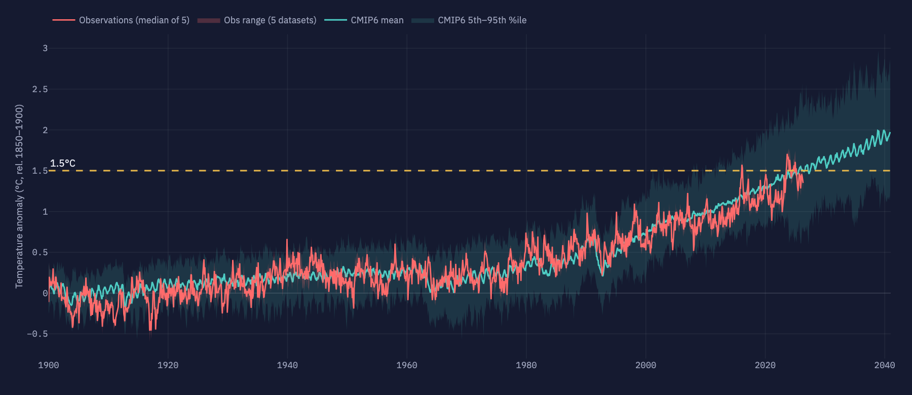
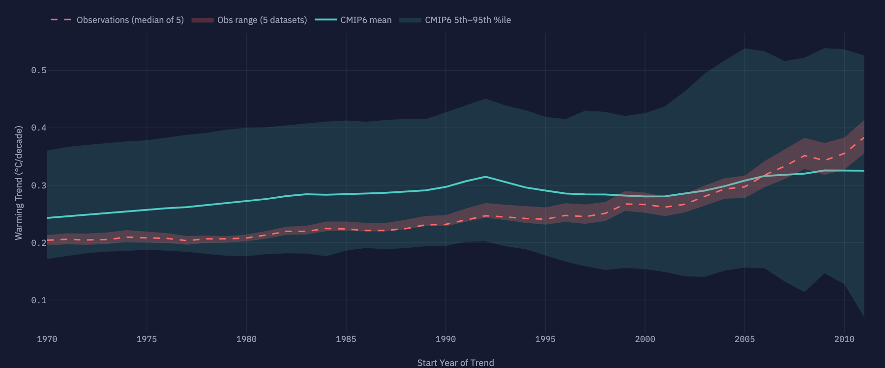
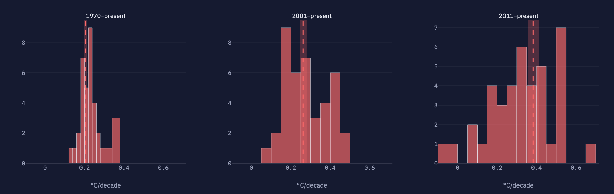

CMIP6 · SSP2-4.5 · five observational records
Observations are running through the middle of the model envelope.
Since 1970 the world has warmed at 0.20 °C/decade against a CMIP6 mean of 0.24; over the last 15 years observations have accelerated to 0.39 — still within the ensemble’s spread.
Observed trend vs CMIP6 ensemble1970–present
Cooler than models
obs · 30th percentile
Warmer than models
Warming vs preindustrial
+1.29 °C
Models: +1.33 (1.02–1.68)
Trend · 1970–present
0.20 °C/dec
Models: 0.24 (0.17–0.32)
Trend · 2001–present
0.25 °C/dec
Models: 0.26 (0.15–0.42)
Trend · 2011–present
0.39 °C/dec
Models: 0.40 (0.22–0.61) · last 12 mo obs–model gap +0.04
01
The scorecard
1900–2040 · SSP2-4.5Five independent observational records against the CMIP6 ensemble mean and its 5th–95th percentile envelope, all referenced to 1850–1900.
Climate models vs observations
Monthly
Observations have tracked the ensemble mean closely for five decades;
the 2023–24 spike briefly touched the envelope’s upper half before easing back.
02
Trends, however you slice them
OLS · to presentPick any start year: how does the observed warming rate compare with each model’s? The histograms show where observations fall within the full ensemble for three common windows.
Warming trend by start year

For start years before ~2005 observations sit in the ensemble’s lower half;
for recent start years they converge on the model mean.
Where observations land in the model distribution

Dashed lines are the five observational records. For 2011–present they fall
near the center of the CMIP6 distribution.